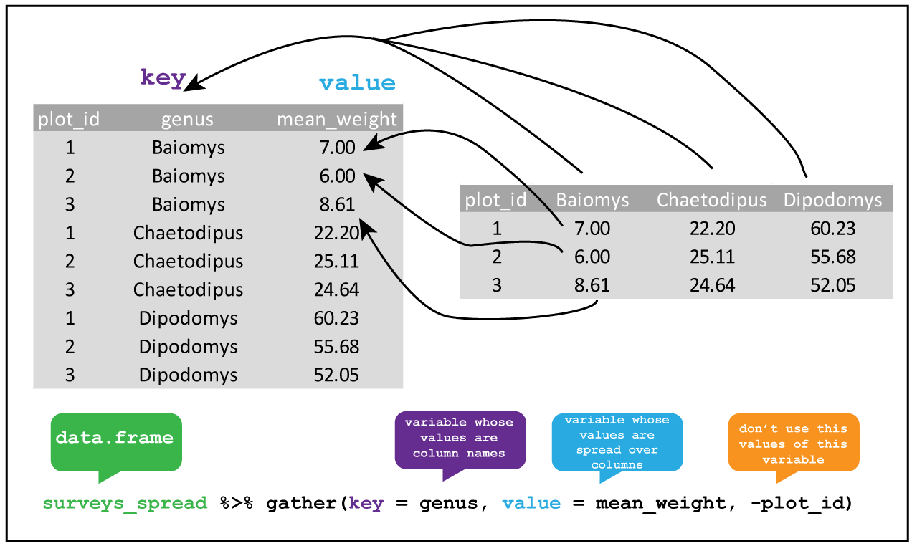

Manipulating and analyzing data with dplyr; Exporting data
Learning Objectives
- Describe the purpose of the
dplyrandtidyrpackages. - Select certain columns in a data frame with the
dplyrfunctionselect. - Select certain rows in a data frame according to filtering conditions with the
dplyrfunctionfilter. - Link the output of one
dplyrfunction to the input of another function with the ‘pipe’ operator%>%. - Add new columns to a data frame that are functions of existing columns with
mutate. - Use the split-apply-combine concept for data analysis.
- Use
summarize,group_by, andtallyto split a data frame into groups of observations, apply a summary statistics for each group, and then combine the results. - Describe the concept of a wide and a long table format and for which purpose those formats are useful.
- Describe what key-value pairs are.
- Reshape a data frame from long to wide format and back with the
spreadandgathercommands from thetidyrpackage. - Export a data frame to a .csv file.
Data Manipulation using dplyr and tidyr
Bracket subsetting is handy, but it can be cumbersome and difficult to read, especially for complicated operations. Enter dplyr. dplyr is a package for making tabular data manipulation easier. It pairs nicely with tidyr which enables you to swiftly convert between different data formats for plotting and analysis.
Packages in R are basically sets of additional functions that let you do more stuff. The functions we’ve been using so far, like str() or data.frame(), come built into R; packages give you access to more of them. Before you use a package for the first time you need to install it on your machine, and then you should import it in every subsequent R session when you need it. You should already have installed the tidyverse package. This is an “umbrella-package” that installs several packages useful for data analysis which work together well such as tidyr, dplyr, ggplot2, tibble, etc.
The tidyverse package tries to address 3 major problems with some of base R functions: 1. The results from a base R function sometimes depend on the type of data. 2. Using R expressions in a non standard way, which can be confusing for new learners. 3. Hidden arguments, having default operations that new learners are not aware of.
We have seen in our previous lesson that when building or importing a data frame, the columns that contain characters (i.e., text) are coerced (=converted) into the factor data type. We had to set stringsAsFactors to FALSE to avoid this hidden argument to convert our data type.
This time will use the tidyverse package to read the data and avoid having to set stringsAsFactors to FALSE
To load the package type:
library("tidyverse") ## load the tidyverse packages, incl. dplyrWhat are dplyr and tidyr?
The package dplyr provides easy tools for the most common data manipulation tasks. It is built to work directly with data frames, with many common tasks optimized by being written in a compiled language (C++). An additional feature is the ability to work directly with data stored in an external database. The benefits of doing this are that the data can be managed natively in a relational database, queries can be conducted on that database, and only the results of the query are returned.
This addresses a common problem with R in that all operations are conducted in-memory and thus the amount of data you can work with is limited by available memory. The database connections essentially remove that limitation in that you can connect to a database of many hundreds of GB, conduct queries on it directly, and pull back into R only what you need for analysis.
The package tidyr addresses the common problem of wanting to reshape your data for plotting and use by different R functions. Sometimes we want data sets where we have one row per measurement. Sometimes we want a data frame where each measurement type has its own column, and rows are instead more aggregated groups - like plots or aquaria. Moving back and forth between these formats is nontrivial, and tidyr gives you tools for this and more sophisticated data manipulation.
To learn more about dplyr and tidyr after the workshop, you may want to check out this handy data transformation with dplyr cheatsheet and this one about tidyr.
We’ll read in our data using the read_csv() function, from the tidyverse package readr, instead of read.csv().
surveys <- read_csv("data/portal_data_joined.csv")## Parsed with column specification:
## cols(
## record_id = col_double(),
## month = col_double(),
## day = col_double(),
## year = col_double(),
## plot_id = col_double(),
## species_id = col_character(),
## sex = col_character(),
## hindfoot_length = col_double(),
## weight = col_double(),
## genus = col_character(),
## species = col_character(),
## taxa = col_character(),
## plot_type = col_character()
## )## inspect the data
str(surveys)Notice that the class of the data is now tbl_df This is referred to as a “tibble”. Tibbles are almost identical to R’s standard data frames, but they tweak some of the old behaviors of data frames. For our purposes the only differences between data frames and tibbles are that:
- When you print a tibble, R displays the data type of each column under its name; it prints only the first few rows of data and only as many columns as fit on one screen.
- Columns of class
characterare never automatically converted into factors.
Selecting columns and filtering rows
We’re going to learn some of the most common dplyr functions: select(), filter(), mutate(), group_by(), and summarize(). To select columns of a data frame, use select(). The first argument to this function is the data frame (surveys), and the subsequent arguments are the columns to keep.
select(surveys, plot_id, species_id, weight)To choose rows based on a specific criteria, use filter():
filter(surveys, year == 1995)## # A tibble: 1,180 x 13
## record_id month day year plot_id species_id sex hindfoot_length
## <dbl> <dbl> <dbl> <dbl> <dbl> <chr> <chr> <dbl>
## 1 22314 6 7 1995 2 NL M 34
## 2 22728 9 23 1995 2 NL F 32
## 3 22899 10 28 1995 2 NL F 32
## 4 23032 12 2 1995 2 NL F 33
## 5 22003 1 11 1995 2 DM M 37
## 6 22042 2 4 1995 2 DM F 36
## 7 22044 2 4 1995 2 DM M 37
## 8 22105 3 4 1995 2 DM F 37
## 9 22109 3 4 1995 2 DM M 37
## 10 22168 4 1 1995 2 DM M 36
## # … with 1,170 more rows, and 5 more variables: weight <dbl>, genus <chr>,
## # species <chr>, taxa <chr>, plot_type <chr>Pipes
What if you want to select and filter at the same time? There are three ways to do this: use intermediate steps, nested functions, or pipes.
With intermediate steps, you create a temporary data frame and use that as input to the next function, like this:
surveys2 <- filter(surveys, weight < 5)
surveys_sml <- select(surveys2, species_id, sex, weight)This is readable, but can clutter up your workspace with lots of objects that you have to name individually. With multiple steps, that can be hard to keep track of.
You can also nest functions (i.e. one function inside of another), like this:
surveys_sml <- select(filter(surveys, weight < 5), species_id, sex, weight)This is handy, but can be difficult to read if too many functions are nested, as R evaluates the expression from the inside out (in this case, filtering, then selecting).
The last option, pipes, are a recent addition to R. Pipes let you take the output of one function and send it directly to the next, which is useful when you need to do many things to the same dataset. Pipes in R look like %>% and are made available via the magrittr package, installed automatically with dplyr. If you use RStudio, you can type the pipe with Ctrl + Shift + M if you have a PC or Cmd + Shift + M if you have a Mac.
surveys %>%
filter(weight < 5) %>%
select(species_id, sex, weight)## # A tibble: 17 x 3
## species_id sex weight
## <chr> <chr> <dbl>
## 1 PF F 4
## 2 PF F 4
## 3 PF M 4
## 4 RM F 4
## 5 RM M 4
## 6 PF <NA> 4
## 7 PP M 4
## 8 RM M 4
## 9 RM M 4
## 10 RM M 4
## 11 PF M 4
## 12 PF F 4
## 13 RM M 4
## 14 RM M 4
## 15 RM F 4
## 16 RM M 4
## 17 RM M 4In the above code, we use the pipe to send the surveys dataset first through filter() to keep rows where weight is less than 5, then through select() to keep only the species_id, sex, and weight columns. Since %>% takes the object on its left and passes it as the first argument to the function on its right, we don’t need to explicitly include the data frame as an argument to the filter() and select() functions any more.
Some may find it helpful to read the pipe like the word “then”. For instance, in the above example, we took the data frame surveys, then we filtered for rows with weight < 5, then we selected columns species_id, sex, and weight. The dplyr functions by themselves are somewhat simple, but by combining them into linear workflows with the pipe, we can accomplish more complex manipulations of data frames.
If we want to create a new object with this smaller version of the data, we can assign it a new name:
surveys_sml <- surveys %>%
filter(weight < 5) %>%
select(species_id, sex, weight)
surveys_sml## # A tibble: 17 x 3
## species_id sex weight
## <chr> <chr> <dbl>
## 1 PF F 4
## 2 PF F 4
## 3 PF M 4
## 4 RM F 4
## 5 RM M 4
## 6 PF <NA> 4
## 7 PP M 4
## 8 RM M 4
## 9 RM M 4
## 10 RM M 4
## 11 PF M 4
## 12 PF F 4
## 13 RM M 4
## 14 RM M 4
## 15 RM F 4
## 16 RM M 4
## 17 RM M 4Note that the final data frame is the leftmost part of this expression.
Challenge
Using pipes, subset the surveys data to include individuals collected before 1995 and retain only the columns year, sex, and weight.
ANSWER
surveys %>%
filter(year < 1995) %>%
select(year, sex, weight)Mutate
Frequently you’ll want to create new columns based on the values in existing columns, for example to do unit conversions, or to find the ratio of values in two columns. For this we’ll use mutate().
To create a new column of weight in kg:
surveys %>%
mutate(weight_kg = weight / 1000)## # A tibble: 34,786 x 14
## record_id month day year plot_id species_id sex hindfoot_length
## <dbl> <dbl> <dbl> <dbl> <dbl> <chr> <chr> <dbl>
## 1 1 7 16 1977 2 NL M 32
## 2 72 8 19 1977 2 NL M 31
## 3 224 9 13 1977 2 NL <NA> NA
## 4 266 10 16 1977 2 NL <NA> NA
## 5 349 11 12 1977 2 NL <NA> NA
## 6 363 11 12 1977 2 NL <NA> NA
## 7 435 12 10 1977 2 NL <NA> NA
## 8 506 1 8 1978 2 NL <NA> NA
## 9 588 2 18 1978 2 NL M NA
## 10 661 3 11 1978 2 NL <NA> NA
## # … with 34,776 more rows, and 6 more variables: weight <dbl>,
## # genus <chr>, species <chr>, taxa <chr>, plot_type <chr>,
## # weight_kg <dbl>You can also create a second new column based on the first new column within the same call of mutate():
surveys %>%
mutate(weight_kg = weight / 1000,
weight_kg2 = weight_kg * 2)## # A tibble: 34,786 x 15
## record_id month day year plot_id species_id sex hindfoot_length
## <dbl> <dbl> <dbl> <dbl> <dbl> <chr> <chr> <dbl>
## 1 1 7 16 1977 2 NL M 32
## 2 72 8 19 1977 2 NL M 31
## 3 224 9 13 1977 2 NL <NA> NA
## 4 266 10 16 1977 2 NL <NA> NA
## 5 349 11 12 1977 2 NL <NA> NA
## 6 363 11 12 1977 2 NL <NA> NA
## 7 435 12 10 1977 2 NL <NA> NA
## 8 506 1 8 1978 2 NL <NA> NA
## 9 588 2 18 1978 2 NL M NA
## 10 661 3 11 1978 2 NL <NA> NA
## # … with 34,776 more rows, and 7 more variables: weight <dbl>,
## # genus <chr>, species <chr>, taxa <chr>, plot_type <chr>,
## # weight_kg <dbl>, weight_kg2 <dbl>If this runs off your screen and you just want to see the first few rows, you can use a pipe to view the head() of the data. (Pipes work with non-dplyr functions, too, as long as the dplyr or magrittr package is loaded).
surveys %>%
mutate(weight_kg = weight / 1000) %>%
head()## # A tibble: 6 x 14
## record_id month day year plot_id species_id sex hindfoot_length
## <dbl> <dbl> <dbl> <dbl> <dbl> <chr> <chr> <dbl>
## 1 1 7 16 1977 2 NL M 32
## 2 72 8 19 1977 2 NL M 31
## 3 224 9 13 1977 2 NL <NA> NA
## 4 266 10 16 1977 2 NL <NA> NA
## 5 349 11 12 1977 2 NL <NA> NA
## 6 363 11 12 1977 2 NL <NA> NA
## # … with 6 more variables: weight <dbl>, genus <chr>, species <chr>,
## # taxa <chr>, plot_type <chr>, weight_kg <dbl>The first few rows of the output are full of NAs, so if we wanted to remove those we could insert a filter() in the chain:
surveys %>%
filter(!is.na(weight)) %>%
mutate(weight_kg = weight / 1000) %>%
head()## # A tibble: 6 x 14
## record_id month day year plot_id species_id sex hindfoot_length
## <dbl> <dbl> <dbl> <dbl> <dbl> <chr> <chr> <dbl>
## 1 588 2 18 1978 2 NL M NA
## 2 845 5 6 1978 2 NL M 32
## 3 990 6 9 1978 2 NL M NA
## 4 1164 8 5 1978 2 NL M 34
## 5 1261 9 4 1978 2 NL M 32
## 6 1453 11 5 1978 2 NL M NA
## # … with 6 more variables: weight <dbl>, genus <chr>, species <chr>,
## # taxa <chr>, plot_type <chr>, weight_kg <dbl>is.na() is a function that determines whether something is an NA. The ! symbol negates the result, so we’re asking for every row where weight is not an NA.
Challenge
Create a new data frame from the surveys data that meets the following criteria: contains only the species_id column and a new column called hindfoot_half containing values that are half the hindfoot_length values. In this hindfoot_half column, there are no NAs and all values are less than 30.
Hint: think about how the commands should be ordered to produce this data frame!
ANSWER
surveys_hindfoot_half <- surveys %>%
filter(!is.na(hindfoot_length)) %>%
mutate(hindfoot_half = hindfoot_length / 2) %>%
filter(hindfoot_half < 30) %>%
select(species_id, hindfoot_half)Split-apply-combine data analysis and the summarize() function
Many data analysis tasks can be approached using the split-apply-combine paradigm: split the data into groups, apply some analysis to each group, and then combine the results. dplyr makes this very easy through the use of the group_by() function.
The summarize() function
group_by() is often used together with summarize(), which collapses each group into a single-row summary of that group. group_by() takes as arguments the column names that contain the categorical variables for which you want to calculate the summary statistics. So to compute the mean weight by sex:
surveys %>%
group_by(sex) %>%
summarize(mean_weight = mean(weight, na.rm = TRUE))## # A tibble: 3 x 2
## sex mean_weight
## <chr> <dbl>
## 1 <NA> 64.7
## 2 F 42.2
## 3 M 43.0You may also have noticed that the output from these calls doesn’t run off the screen anymore. It’s one of the advantages of tbl_df over data frame.
You can also group by multiple columns:
surveys %>%
group_by(sex, species_id) %>%
summarize(mean_weight = mean(weight, na.rm = TRUE))## # A tibble: 92 x 3
## # Groups: sex [3]
## sex species_id mean_weight
## <chr> <chr> <dbl>
## 1 <NA> AB NaN
## 2 <NA> AH NaN
## 3 <NA> AS NaN
## 4 <NA> BA NaN
## 5 <NA> CB NaN
## 6 <NA> CM NaN
## 7 <NA> CQ NaN
## 8 <NA> CS NaN
## 9 <NA> CT NaN
## 10 <NA> CU NaN
## # … with 82 more rowsWhen grouping both by sex and species_id, the first rows are for individuals that escaped before their sex could be determined and weighted. You may notice that the last column does not contain NA but NaN (which refers to “Not a Number”). To avoid this, we can remove the missing values for weight before we attempt to calculate the summary statistics on weight. Because the missing values are removed first, we can omit na.rm = TRUE when computing the mean:
surveys %>%
filter(!is.na(weight)) %>%
group_by(sex, species_id) %>%
summarize(mean_weight = mean(weight))## # A tibble: 64 x 3
## # Groups: sex [3]
## sex species_id mean_weight
## <chr> <chr> <dbl>
## 1 <NA> DM 38.3
## 2 <NA> DO 50.7
## 3 <NA> DS 120
## 4 <NA> NL 168.
## 5 <NA> OL 29
## 6 <NA> OT 21.2
## 7 <NA> PB 30.6
## 8 <NA> PE 17.7
## 9 <NA> PF 6
## 10 <NA> PI 18
## # … with 54 more rowsHere, again, the output from these calls doesn’t run off the screen anymore. If you want to display more data, you can use the print() function at the end of your chain with the argument n specifying the number of rows to display:
surveys %>%
filter(!is.na(weight)) %>%
group_by(sex, species_id) %>%
summarize(mean_weight = mean(weight)) %>%
print(n = 15)## # A tibble: 64 x 3
## # Groups: sex [3]
## sex species_id mean_weight
## <chr> <chr> <dbl>
## 1 <NA> DM 38.3
## 2 <NA> DO 50.7
## 3 <NA> DS 120
## 4 <NA> NL 168.
## 5 <NA> OL 29
## 6 <NA> OT 21.2
## 7 <NA> PB 30.6
## 8 <NA> PE 17.7
## 9 <NA> PF 6
## 10 <NA> PI 18
## 11 <NA> PL 25
## 12 <NA> PM 20.2
## 13 <NA> PP 14.6
## 14 <NA> RM 11.1
## 15 <NA> SF 40.5
## # … with 49 more rowsOnce the data are grouped, you can also summarize multiple variables at the same time (and not necessarily on the same variable). For instance, we could add a column indicating the minimum weight for each species for each sex:
surveys %>%
filter(!is.na(weight)) %>%
group_by(sex, species_id) %>%
summarize(mean_weight = mean(weight),
min_weight = min(weight))## # A tibble: 64 x 4
## # Groups: sex [3]
## sex species_id mean_weight min_weight
## <chr> <chr> <dbl> <dbl>
## 1 <NA> DM 38.3 24
## 2 <NA> DO 50.7 44
## 3 <NA> DS 120 78
## 4 <NA> NL 168. 83
## 5 <NA> OL 29 21
## 6 <NA> OT 21.2 18
## 7 <NA> PB 30.6 20
## 8 <NA> PE 17.7 17
## 9 <NA> PF 6 4
## 10 <NA> PI 18 18
## # … with 54 more rowsTallying
When working with data, we often want to know the number of observations found for each factor or combination of factors. For this task, dplyr provides tally(). For example, if we wanted to group by sex and find the number of rows of data for each sex, we would do:
surveys %>%
group_by(sex) %>%
tally()## # A tibble: 3 x 2
## sex n
## <chr> <int>
## 1 <NA> 1748
## 2 F 15690
## 3 M 17348Here, tally() is the action applied to the groups created by group_by() and counts the total number of records for each category.
Challenge
- How many individuals were caught in each
plot_typesurveyed? - Use
group_by()andsummarize()to find the mean, min, and max hindfoot length for each species (usingspecies_id). - What was the heaviest animal measured in each year? Return the columns
year,genus,species_id, andweight. - You saw above how to count the number of individuals of each
sexusing a combination ofgroup_by()andtally(). How could you get the same result usinggroup_by()andsummarize()? Hint: see?n.
ANSWER
## Answer 1
surveys %>%
group_by(plot_type) %>%
tally()## # A tibble: 5 x 2
## plot_type n
## <chr> <int>
## 1 Control 15611
## 2 Long-term Krat Exclosure 5118
## 3 Rodent Exclosure 4233
## 4 Short-term Krat Exclosure 5906
## 5 Spectab exclosure 3918## Answer 2
surveys %>%
filter(!is.na(hindfoot_length)) %>%
group_by(species_id) %>%
summarize(
mean_hindfoot_length = mean(hindfoot_length),
min_hindfoot_length = min(hindfoot_length),
max_hindfoot_length = max(hindfoot_length)
)## # A tibble: 25 x 4
## species_id mean_hindfoot_length min_hindfoot_length max_hindfoot_length
## <chr> <dbl> <dbl> <dbl>
## 1 AH 33 31 35
## 2 BA 13 6 16
## 3 DM 36.0 16 50
## 4 DO 35.6 26 64
## 5 DS 49.9 39 58
## 6 NL 32.3 21 70
## 7 OL 20.5 12 39
## 8 OT 20.3 13 50
## 9 OX 19.1 13 21
## 10 PB 26.1 2 47
## # … with 15 more rows## Answer 3
surveys %>%
filter(!is.na(weight)) %>%
group_by(year) %>%
filter(weight == max(weight)) %>%
select(year, genus, species, weight) %>%
arrange(year)## # A tibble: 27 x 4
## # Groups: year [26]
## year genus species weight
## <dbl> <chr> <chr> <dbl>
## 1 1977 Dipodomys spectabilis 149
## 2 1978 Neotoma albigula 232
## 3 1978 Neotoma albigula 232
## 4 1979 Neotoma albigula 274
## 5 1980 Neotoma albigula 243
## 6 1981 Neotoma albigula 264
## 7 1982 Neotoma albigula 252
## 8 1983 Neotoma albigula 256
## 9 1984 Neotoma albigula 259
## 10 1985 Neotoma albigula 225
## # … with 17 more rows## Answer 4
surveys %>%
group_by(sex) %>%
summarize(n = n())## # A tibble: 3 x 2
## sex n
## <chr> <int>
## 1 <NA> 1748
## 2 F 15690
## 3 M 17348Reshaping with gather and spread
In the spreadsheet lesson we discussed how to structure our data leading to the four rules defining a tidy dataset:
- Each variable has its own column
- Each observation has its own row
- Each value must have its own cell
- Each type of observational unit forms a table
Here we examine the fourth rule: Each type of observational unit forms a table.
In surveys , the rows of surveys contain the values of variables associated with each record (the unit), values such the weight or sex of each animal associated with each record. What if instead of comparing records, we wanted to compare the different mean weight of each species between plots? (Ignoring plot_type for simplicity).
We’d need to create a new table where each row (the unit) is comprise of values of variables associated with each plot. In practical terms this means the values of the species in genus would become the names of column variables and the cells would contain the values of the mean weight observed on each plot.
Having created a new table, it is therefore straightforward to explore the relationship between the weight of different species within, and between, the plots. The key point here is that we are still following a tidy data structure, but we have reshaped the data according to the observations of interest: average species weight per plot instead of recordings per date.
The opposite transformation would be to transform column names into values of a variable.
We can do both these of transformations with two tidyr functions, spread() and gather().
Spreading
spread() takes three principal arguments:
- the data
- the key column variable whose values will become new column names.
- the value column variable whose values will fill the new column variables.
Further arguments include fill which, if set, fills in missing values with the value provided.
Let’s use spread() to transform surveys to find the mean weight of each species in each plot over the entire survey period. We use filter(), group_by() and summarise() to filter our observations and variables of interest, and create a new variable for the mean_weight. We use the pipe as before too.
surveys_gw <- surveys %>%
filter(!is.na(weight)) %>%
group_by(genus, plot_id) %>%
summarize(mean_weight = mean(weight))
str(surveys_gw)## Classes 'grouped_df', 'tbl_df', 'tbl' and 'data.frame': 196 obs. of 3 variables:
## $ genus : chr "Baiomys" "Baiomys" "Baiomys" "Baiomys" ...
## $ plot_id : num 1 2 3 5 18 19 20 21 1 2 ...
## $ mean_weight: num 7 6 8.61 7.75 9.5 ...
## - attr(*, "spec")=
## .. cols(
## .. record_id = col_double(),
## .. month = col_double(),
## .. day = col_double(),
## .. year = col_double(),
## .. plot_id = col_double(),
## .. species_id = col_character(),
## .. sex = col_character(),
## .. hindfoot_length = col_double(),
## .. weight = col_double(),
## .. genus = col_character(),
## .. species = col_character(),
## .. taxa = col_character(),
## .. plot_type = col_character()
## .. )
## - attr(*, "groups")=Classes 'tbl_df', 'tbl' and 'data.frame': 10 obs. of 2 variables:
## ..$ genus: chr "Baiomys" "Chaetodipus" "Dipodomys" "Neotoma" ...
## ..$ .rows:List of 10
## .. ..$ : int 1 2 3 4 5 6 7 8
## .. ..$ : int 9 10 11 12 13 14 15 16 17 18 ...
## .. ..$ : int 33 34 35 36 37 38 39 40 41 42 ...
## .. ..$ : int 57 58 59 60 61 62 63 64 65 66 ...
## .. ..$ : int 81 82 83 84 85 86 87 88 89 90 ...
## .. ..$ : int 105 106 107 108 109 110 111 112 113 114 ...
## .. ..$ : int 128 129 130 131 132 133 134 135 136 137 ...
## .. ..$ : int 152 153 154 155 156 157 158 159 160 161 ...
## .. ..$ : int 176 177 178 179 180 181 182 183 184 185 ...
## .. ..$ : int 195 196
## ..- attr(*, ".drop")= logi TRUEThis yields surveys_gw where the observations for each plot are spread across multiple rows, 196 observations of 13 variables. Using spread() to key on genus with values from mean_weight this becomes 24 observations of 11 variables, one row for each plot. We again use pipes:
surveys_spread <- surveys_gw %>%
spread(key = genus, value = mean_weight)
str(surveys_spread)## Classes 'tbl_df', 'tbl' and 'data.frame': 24 obs. of 11 variables:
## $ plot_id : num 1 2 3 4 5 6 7 8 9 10 ...
## $ Baiomys : num 7 6 8.61 NA 7.75 ...
## $ Chaetodipus : num 22.2 25.1 24.6 23 18 ...
## $ Dipodomys : num 60.2 55.7 52 57.5 51.1 ...
## $ Neotoma : num 156 169 158 164 190 ...
## $ Onychomys : num 27.7 26.9 26 28.1 27 ...
## $ Perognathus : num 9.62 6.95 7.51 7.82 8.66 ...
## $ Peromyscus : num 22.2 22.3 21.4 22.6 21.2 ...
## $ Reithrodontomys: num 11.4 10.7 10.5 10.3 11.2 ...
## $ Sigmodon : num NA 70.9 65.6 82 82.7 ...
## $ Spermophilus : num NA NA NA NA NA NA NA NA NA NA ...
We could now plot comparisons between the weight of species in different plots, although we may wish to fill in the missing values first.
surveys_gw %>%
spread(genus, mean_weight, fill = 0) %>%
head## # A tibble: 6 x 11
## plot_id Baiomys Chaetodipus Dipodomys Neotoma Onychomys Perognathus
## <dbl> <dbl> <dbl> <dbl> <dbl> <dbl> <dbl>
## 1 1 7 22.2 60.2 156. 27.7 9.62
## 2 2 6 25.1 55.7 169. 26.9 6.95
## 3 3 8.61 24.6 52.0 158. 26.0 7.51
## 4 4 0 23.0 57.5 164. 28.1 7.82
## 5 5 7.75 18.0 51.1 190. 27.0 8.66
## 6 6 0 24.9 58.6 180. 25.9 7.81
## # … with 4 more variables: Peromyscus <dbl>, Reithrodontomys <dbl>,
## # Sigmodon <dbl>, Spermophilus <dbl>Gathering
The opposing situation could occur if we had been provided with data in the form of surveys_spread, where the genus names are column names, but we wish to treat them as values of a genus variable instead.
In this situation we are gathering the column names and turning them into a pair of new variables. One variable represents the column names as values, and the other variable contains the values previously associated with the column names.
gather() takes four principal arguments:
- the data
- the key column variable we wish to create from column names.
- the values column variable we wish to create and fill with values associated with the key.
- the names of the columns we use to fill the key variable (or to drop).
To recreate surveys_gw from surveys_spread we would create a key called genus and value called mean_weight and use all columns except plot_id for the key variable. Here we drop plot_id column with a minus sign.
surveys_gather <- surveys_spread %>%
gather(key = genus, value = mean_weight, -plot_id)
str(surveys_gather)## Classes 'tbl_df', 'tbl' and 'data.frame': 240 obs. of 3 variables:
## $ plot_id : num 1 2 3 4 5 6 7 8 9 10 ...
## $ genus : chr "Baiomys" "Baiomys" "Baiomys" "Baiomys" ...
## $ mean_weight: num 7 6 8.61 NA 7.75 ...
Note that now the NA genera are included in the re-gathered format. Spreading and then gathering can be a useful way to balance out a dataset so every replicate has the same composition.
We could also have used a specification for what columns to include. This can be useful if you have a large number of identifying columns, and it’s easier to specify what to gather than what to leave alone. And if the columns are in a row, we don’t even need to list them all out - just use the : operator!
surveys_spread %>%
gather(key = genus, value = mean_weight, Baiomys:Spermophilus) %>%
head## # A tibble: 6 x 3
## plot_id genus mean_weight
## <dbl> <chr> <dbl>
## 1 1 Baiomys 7
## 2 2 Baiomys 6
## 3 3 Baiomys 8.61
## 4 4 Baiomys NA
## 5 5 Baiomys 7.75
## 6 6 Baiomys NAChallenge
- Spread the
surveysdata frame withyearas columns,plot_idas rows, and the number of genera per plot as the values. You will need to summarize before reshaping, and use the functionn_distinct()to get the number of unique genera within a particular chunk of data. It’s a powerful function! See?n_distinctfor more. - Now take that data frame and
gather()it again, so each row is a uniqueplot_idbyyearcombination. - The
surveysdata set has two measurement columns:hindfoot_lengthandweight. This makes it difficult to do things like look at the relationship between mean values of each measurement per year in different plot types. Let’s walk through a common solution for this type of problem. First, usegather()to create a dataset where we have a key column calledmeasurementand avaluecolumn that takes on the value of eitherhindfoot_lengthorweight. Hint: You’ll need to specify which columns are being gathered. - With this new data set, calculate the average of each
measurementin eachyearfor each differentplot_type. Thenspread()them into a data set with a column forhindfoot_lengthandweight. Hint: You only need to specify the key and value columns forspread()
ANSWER
## Answer 1
rich_time <- surveys %>%
group_by(plot_id, year) %>%
summarize(n_genera = n_distinct(genus)) %>%
spread(year, n_genera)
head(rich_time)## # A tibble: 6 x 27
## # Groups: plot_id [6]
## plot_id `1977` `1978` `1979` `1980` `1981` `1982` `1983` `1984` `1985`
## <dbl> <int> <int> <int> <int> <int> <int> <int> <int> <int>
## 1 1 2 3 4 7 5 6 7 6 4
## 2 2 6 6 6 8 5 9 9 9 6
## 3 3 5 6 4 6 6 8 10 11 7
## 4 4 4 4 3 4 5 4 6 3 4
## 5 5 4 3 2 5 4 6 7 7 3
## 6 6 3 4 3 4 5 9 9 7 5
## # … with 17 more variables: `1986` <int>, `1987` <int>, `1988` <int>,
## # `1989` <int>, `1990` <int>, `1991` <int>, `1992` <int>, `1993` <int>,
## # `1994` <int>, `1995` <int>, `1996` <int>, `1997` <int>, `1998` <int>,
## # `1999` <int>, `2000` <int>, `2001` <int>, `2002` <int>## Answer 2
rich_time %>%
gather(year, n_genera, -plot_id)## # A tibble: 624 x 3
## # Groups: plot_id [24]
## plot_id year n_genera
## <dbl> <chr> <int>
## 1 1 1977 2
## 2 2 1977 6
## 3 3 1977 5
## 4 4 1977 4
## 5 5 1977 4
## 6 6 1977 3
## 7 7 1977 3
## 8 8 1977 2
## 9 9 1977 3
## 10 10 1977 1
## # … with 614 more rows## Answer 3
surveys_long <- surveys %>%
gather(measurement, value, hindfoot_length, weight)
## Answer 4
surveys_long %>%
group_by(year, measurement, plot_type) %>%
summarize(mean_value = mean(value, na.rm=TRUE)) %>%
spread(measurement, mean_value)## # A tibble: 130 x 4
## # Groups: year [26]
## year plot_type hindfoot_length weight
## <dbl> <chr> <dbl> <dbl>
## 1 1977 Control 36.1 50.4
## 2 1977 Long-term Krat Exclosure 33.7 34.8
## 3 1977 Rodent Exclosure 39.1 48.2
## 4 1977 Short-term Krat Exclosure 35.8 41.3
## 5 1977 Spectab exclosure 37.2 47.1
## 6 1978 Control 38.1 70.8
## 7 1978 Long-term Krat Exclosure 22.6 35.9
## 8 1978 Rodent Exclosure 37.8 67.3
## 9 1978 Short-term Krat Exclosure 36.9 63.8
## 10 1978 Spectab exclosure 42.3 80.1
## # … with 120 more rowsExporting data
Now that you have learned how to use dplyr to extract information from or summarize your raw data, you may want to export these new data sets to share them with your collaborators or for archival.
Similar to the read_csv() function used for reading CSV files into R, the tidyverse includes a write_csv() function that generates CSV files from data frames.
Before using write_csv(), we are going to create a new folder, data_output, in our working directory that will store this generated data set. We don’t want to write generated data sets in the same directory as our raw data. It’s good practice to keep them separate. The data folder should only contain the raw, unaltered data, and should be left alone to make sure we don’t delete or modify it. In contrast, our script will generate the contents of the data_output directory, so even if the files it contains are deleted, we can always re-generate them.
In preparation for our next lesson on plotting, we are going to prepare a cleaned up version of the data set that doesn’t include any missing data.
Let’s start by removing observations for which the species_id is missing. In this data set, the missing species are represented by an empty string and not an NA. Let’s also remove observations for which weight and the hindfoot_length are missing. This data set should also only contain observations of animals for which the sex has been determined:
surveys_complete <- surveys %>%
filter(!is.na(weight), # remove missing weight
!is.na(hindfoot_length), # remove missing hindfoot_length
!is.na(sex)) # remove missing sexBecause we are interested in plotting how species abundances have changed through time, we are also going to remove observations for rare species (i.e., that have been observed less than 50 times). We will do this in two steps: first we are going to create a data set that counts how often each species has been observed, and filter out the rare species; then, we will extract only the observations for these more common species:
## Extract the most common species_id
species_counts <- surveys_complete %>%
group_by(species_id) %>%
tally() %>%
filter(n >= 50)
## Only keep the most common species
surveys_complete <- surveys_complete %>%
filter(species_id %in% species_counts$species_id)To make sure that everyone has the same data set, check that surveys_complete has 30463 rows and 13 columns by typing dim(surveys_complete).
Now that our data set is ready, we can save it as a CSV file in our data_output folder.
write_csv(surveys_complete, path = "data_output/surveys_complete.csv")